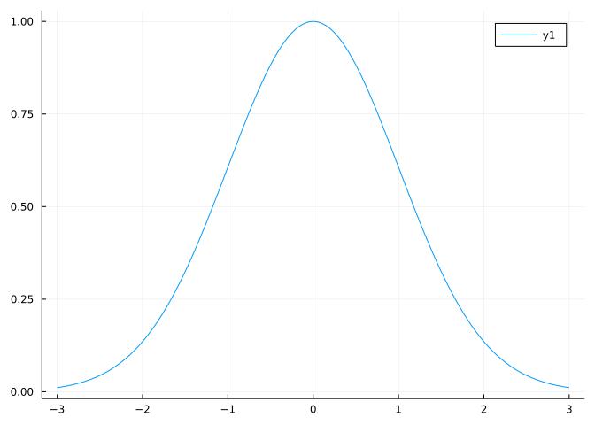
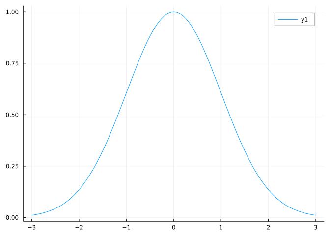
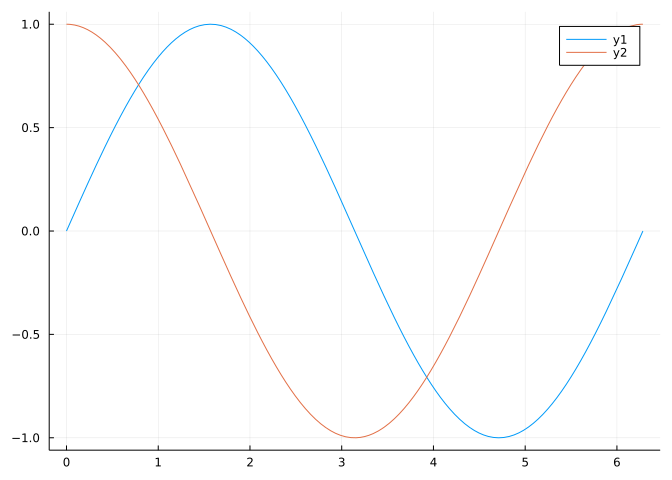
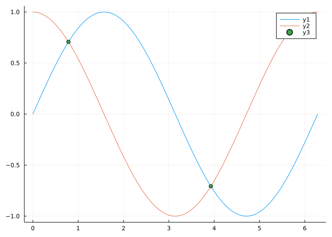
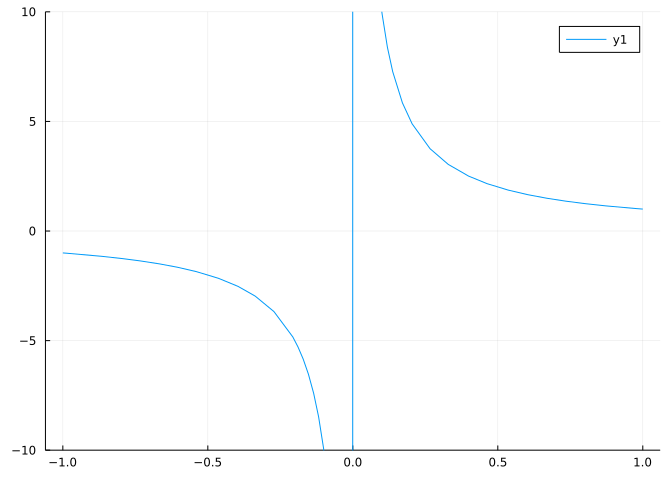
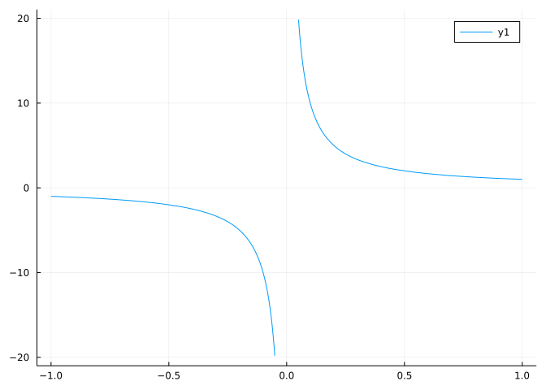
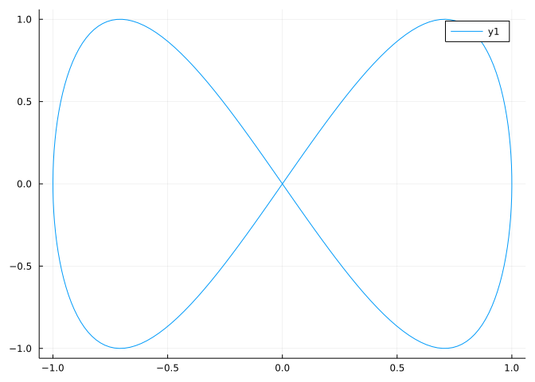
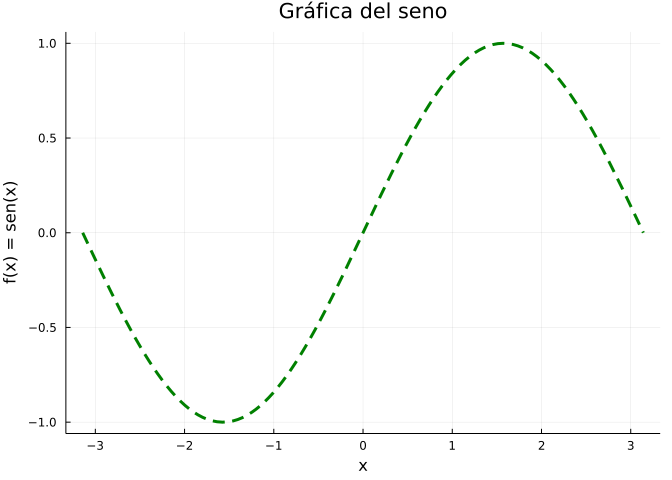
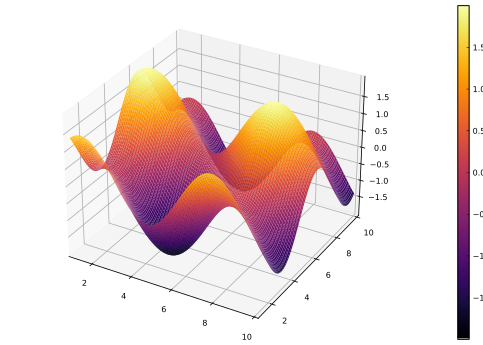

using Plots
f(x) = exp(-x^2 / 2)
plot(f, -3, 3)
Existen muchos paquetes para la representación gráfica en Julia. Los más usados son:
Plots.js es el paquete más usado por disponer de más posibilidades gráficas y ser bastante sencillo de usar.
Implementa una interfaz para otras librerías gráficas (backends), por lo que en algunas ocasiones puede ser bastante lento al tener que llamar a otras librerías.

gr(). (Ver ejemplos)plotlyjs(). (Ver ejemplos)pyplot(). (Ver ejemplos)pgfplotsx(). (Ver ejemplos)unicodeplots(). (Ver ejemplos)plot(f, min, max): Dibuja la gráfica de la función de una variable f para argumentos desde xmin a xmax.using Plots
f(x) = exp(-x^2 / 2)
plot(f, -3, 3)
plot!(f, xmin, xmax): Añade la gráfica de la función de una variable f para argumentos desde xmin a xmax al último gráfico realizado.using Plots
f(x) = sin(x)
g(x) = cos(x)
plot(f, -0, 2π)
plot!(g)
scatter(x, y): Dibuja los puntos con coordenadas x en el vector x y coordenadas y en el vector y.using Plots
f(x) = sin(x)
g(x) = cos(x)
plot(f, -0, 2π)
plot!(g)
x = [π/4, 5π/4]
y = sin.(x)
scatter!(x, y)
Es posible restringir el área de graficación (rango de valores de los ejes) de una función añadiendo los parámetros xlims =(xmin, xmax) para establecer el rango del eje x o ylims = (ymin, ymax) para establecer el rango del eje y.
using Plots
f(x) = 1 / x
plot(f, -1, 1, ylims = (-10, 10))
Cuando una función no está definida para algún valor del rango de valores del eje x dado, la gráfica muestra una línea recta desde el punto de la gráfica anterior hasta el punto siguiente al punto donde la función no existe.
Este comportamiento no es deseable puesto que si la función no existe en un punto no debería existir gráfica para ese punto.
La siguiente función del paquete MATH229 se encarga de evitar esto.
rangeclamp(f): Devuelve una función idéntica a la función f excepto para los puntos donde la función no existe o es infinito que devuelve NaN.using Plots
using MTH229
f(x) = 1 / x
plot(rangeclamp(f), -1, 1)
La función plot también permite dibujar gráficas de funciones paramétricas pasándole las funciones de las coordenadas x e y.
plot(f, g, min, max): Dibuja la gráfica de la función paramétrica \((f(t), g(t))\) para valores del parámetro t entre min y max.using Plots
f(x) = sin(x)
g(x) = sin(2x)
plot(f, g, 0, 2π)
Los siguientes parámetros pueden añadirse a la función plot para modificar el aspecto de los gráficos.
title: Añade un título principal al gráfico.xlab: Añade un título al eje x.ylab: Añade un título al eje y.color: Establece el color de la gráfica.linewidth: Establece el grosor de la línea de la gráfica.linestyle: Establece el estilo de la línea de la gráfica.aspect_ratio: Establece la relación de aspecto entre la escala de los ejes.legend: Activa o desactiva la leyenda del gráfico.using Plots
f(x) = sin(x)
plot(f, -π, π, title = "Gráfica del seno", xlab = "x", ylab = "f(x) = sen(x)",
color = "green", linewidth = 3, linestyle = :dash, legend = false)
Para dibujar superficies en el espacio real se utiliza la función
surface(x, y, f): Dibuja la superficie de la función \(f(x,y)\) en el rango de valores x del eje x e y del eje y.
using Plots
pyplot()
x = range(1, stop=10, length=100)
y = x
f(x,y) = sin(x) + cos(y)
plot(x, y, f, st=:surface)
GadFly.js es un paquete nativo que genera gráficos interactivos 2D y 3D por medio de librerías de Javascript basadas en la gramática de gráficos (usada también por el paquete ggplot2 de R).
Al estar implementado en Julia es mucho más rápido que Plots.js pero ofrece menos posibilidades.
VegaLite.jl es un paquete que genera gráficos estáticos por medio de las librerías de Javascript de la gramática de gráficos Vega.
Dispone de muchas más opciones de personalización de gráficos que GadFly.jl.